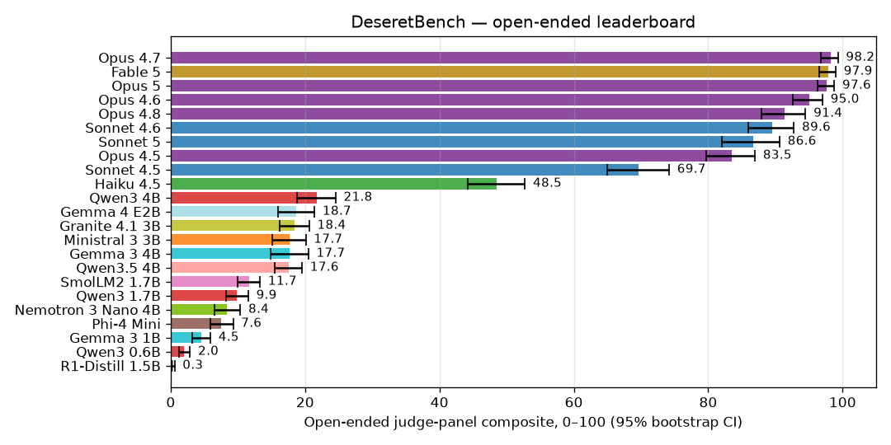
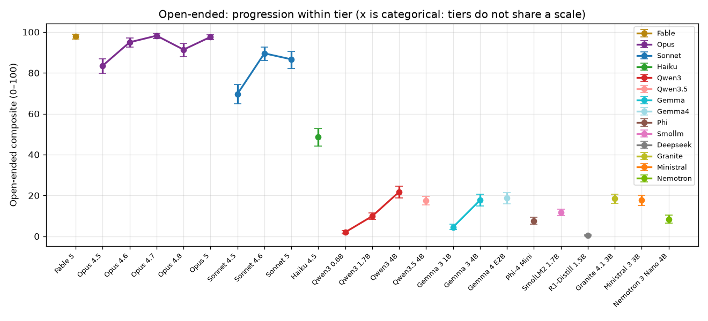
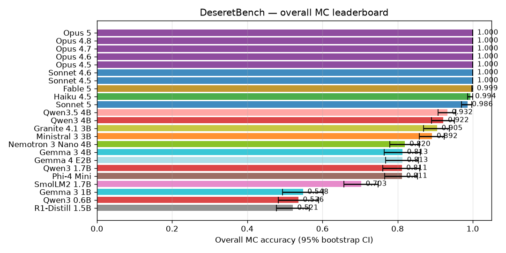
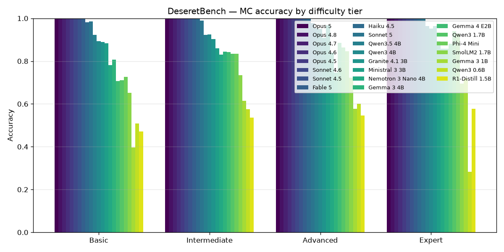
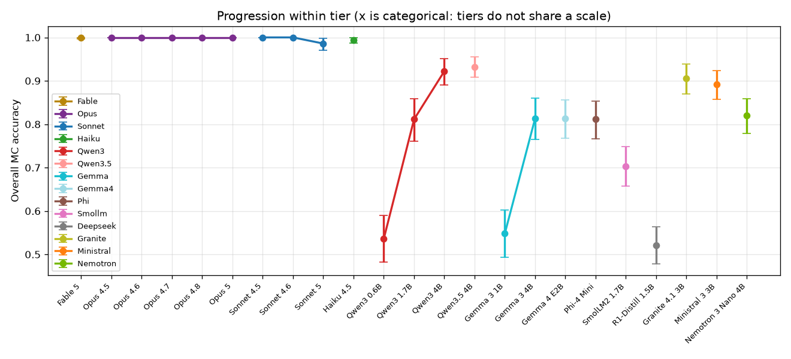

Run: runs/v0_1 · effort (MC=low, open=high, judge=medium) · runs (MC×5, open×3) · 100,000 bootstrap resamples · seed 19470417 · config provenance: run config_snapshot.json (per phase; live config fills phases without a snapshot)
| Rank | Model | Tier | Accuracy | 95% CI (bootstrap) | 95% CI (exact) | Parse-fail | Run SD | n items |
|---|---|---|---|---|---|---|---|---|
| 1 | Opus 5 | opus | 1.000 | [1.000, 1.000] | [0.983, 1.000] | 0.000 | 0.000 | 213 |
| 2 | Opus 4.8 | opus | 1.000 | [1.000, 1.000] | [0.983, 1.000] | 0.000 | 0.000 | 213 |
| 3 | Opus 4.7 | opus | 1.000 | [1.000, 1.000] | [0.983, 1.000] | 0.000 | 0.000 | 213 |
| 4 | Opus 4.6 | opus | 1.000 | [1.000, 1.000] | [0.983, 1.000] | 0.000 | 0.000 | 213 |
| 5 | Opus 4.5 | opus | 1.000 | [1.000, 1.000] | [0.983, 1.000] | 0.000 | 0.000 | 213 |
| 6 | Sonnet 4.6 | sonnet | 1.000 | [1.000, 1.000] | [0.983, 1.000] | 0.000 | 0.000 | 213 |
| 7 | Sonnet 4.5 | sonnet | 1.000 | [1.000, 1.000] | [0.983, 1.000] | 0.000 | 0.000 | 213 |
| 8 | Fable 5 | fable | 0.999 | [0.997, 1.000] | [0.983, 1.000] | 0.000 | 0.002 | 213 |
| 9 | Haiku 4.5 | haiku | 0.994 | [0.987, 1.000] | [0.974, 1.000] | 0.000 | 0.007 | 213 |
| 10 | Sonnet 5 | sonnet | 0.986 | [0.970, 0.998] | [0.967, 0.999] | 0.000 | 0.007 | 213 |
| 11 | Qwen3.5 4B | qwen3.5 | 0.932 | [0.908, 0.955] | [0.927, 0.984] | 0.001 | 0.083 | 213 |
| 12 | Qwen3 4B | qwen3 | 0.922 | [0.890, 0.951] | [0.886, 0.960] | 0.004 | 0.052 | 213 |
| 13 | Granite 4.1 3B | granite | 0.905 | [0.869, 0.938] | [0.853, 0.938] | 0.004 | 0.050 | 213 |
| 14 | Ministral 3 3B | ministral | 0.892 | [0.857, 0.924] | [0.881, 0.957] | 0.046 | 0.091 | 213 |
| 15 | Nemotron 3 Nano 4B | nemotron | 0.820 | [0.779, 0.858] | [0.810, 0.907] | 0.005 | 0.162 | 213 |
| 16 | Gemma 3 4B | gemma | 0.813 | [0.764, 0.860] | [0.758, 0.866] | 0.024 | 0.064 | 213 |
| 17 | Gemma 4 E2B | gemma4 | 0.813 | [0.768, 0.855] | [0.789, 0.891] | 0.000 | 0.119 | 213 |
| 18 | Qwen3 1.7B | qwen3 | 0.811 | [0.761, 0.859] | [0.758, 0.866] | 0.000 | 0.047 | 213 |
| 19 | Phi-4 Mini | phi | 0.811 | [0.766, 0.854] | [0.784, 0.887] | 0.004 | 0.120 | 213 |
| 20 | SmolLM2 1.7B | smollm | 0.703 | [0.657, 0.748] | [0.682, 0.803] | 0.020 | 0.237 | 213 |
| 21 | Gemma 3 1B | gemma | 0.548 | [0.494, 0.603] | [0.484, 0.622] | 0.007 | 0.214 | 213 |
| 22 | Qwen3 0.6B | qwen3 | 0.536 | [0.483, 0.590] | [0.470, 0.608] | 0.114 | 0.228 | 213 |
| 23 | R1-Distill 1.5B | deepseek | 0.521 | [0.478, 0.564] | [0.480, 0.617] | 0.003 | 0.357 | 213 |
At a 100% ceiling the bootstrap interval degenerates to zero width; the exact (Clopper–Pearson) column is the honest one there.
Provenance audit: genuine served-model fallbacks=0 (excluded from scoring) · multi-key extraction artifacts=0 (kept; primary model verified by pricing) · failed calls=0 (excluded).
Item analysis: 213 items · mean difficulty p=0.8699 · mean discrimination=0.4834 (defined for only 204 items — the rest sit at the ceiling) · ceiling (p>.95)=43 · floor (p<.30)=0 · low-discrimination=3
| Model | Doctrine | Ordinances | Church Org | Eternal Family | Rest. History | Living Gospel | Cultural |
|---|---|---|---|---|---|---|---|
| Opus 5 | 1.00 | 1.00 | 1.00 | 1.00 | 1.00 | 1.00 | 1.00 |
| Opus 4.8 | 1.00 | 1.00 | 1.00 | 1.00 | 1.00 | 1.00 | 1.00 |
| Opus 4.7 | 1.00 | 1.00 | 1.00 | 1.00 | 1.00 | 1.00 | 1.00 |
| Opus 4.6 | 1.00 | 1.00 | 1.00 | 1.00 | 1.00 | 1.00 | 1.00 |
| Opus 4.5 | 1.00 | 1.00 | 1.00 | 1.00 | 1.00 | 1.00 | 1.00 |
| Sonnet 4.6 | 1.00 | 1.00 | 1.00 | 1.00 | 1.00 | 1.00 | 1.00 |
| Sonnet 4.5 | 1.00 | 1.00 | 1.00 | 1.00 | 1.00 | 1.00 | 1.00 |
| Fable 5 | 1.00 | 1.00 | 1.00 | 1.00 | 1.00 | 0.99 | 1.00 |
| Haiku 4.5 | 1.00 | 1.00 | 1.00 | 1.00 | 0.99 | 0.97 | 1.00 |
| Sonnet 5 | 0.99 | 0.97 | 0.95 | 1.00 | 1.00 | 0.99 | 1.00 |
| Qwen3.5 4B | 0.94 | 0.95 | 0.83 | 0.97 | 0.95 | 0.93 | 0.94 |
| Qwen3 4B | 0.84 | 0.99 | 0.86 | 0.99 | 0.93 | 0.96 | 0.92 |
| Granite 4.1 3B | 0.89 | 0.94 | 0.81 | 0.94 | 0.92 | 0.92 | 0.92 |
| Ministral 3 3B | 0.89 | 0.95 | 0.86 | 0.92 | 0.92 | 0.85 | 0.83 |
| Nemotron 3 Nano 4B | 0.70 | 0.86 | 0.89 | 0.86 | 0.81 | 0.84 | 0.88 |
| Gemma 3 4B | 0.72 | 0.73 | 0.83 | 0.85 | 0.85 | 0.94 | 0.85 |
| Gemma 4 E2B | 0.79 | 0.86 | 0.82 | 0.82 | 0.90 | 0.82 | 0.67 |
| Qwen3 1.7B | 0.77 | 0.86 | 0.82 | 0.90 | 0.70 | 0.79 | 0.88 |
| Phi-4 Mini | 0.74 | 0.84 | 0.81 | 0.87 | 0.81 | 0.81 | 0.86 |
| SmolLM2 1.7B | 0.66 | 0.75 | 0.68 | 0.69 | 0.70 | 0.76 | 0.70 |
| Gemma 3 1B | 0.49 | 0.55 | 0.55 | 0.55 | 0.52 | 0.67 | 0.54 |
| Qwen3 0.6B | 0.45 | 0.59 | 0.47 | 0.55 | 0.60 | 0.51 | 0.62 |
| R1-Distill 1.5B | 0.49 | 0.58 | 0.70 | 0.45 | 0.39 | 0.55 | 0.55 |
| Model | Basic | Intermediate | Advanced | Expert |
|---|---|---|---|---|
| Opus 5 | 1.00 | 1.00 | 1.00 | 1.00 |
| Opus 4.8 | 1.00 | 1.00 | 1.00 | 1.00 |
| Opus 4.7 | 1.00 | 1.00 | 1.00 | 1.00 |
| Opus 4.6 | 1.00 | 1.00 | 1.00 | 1.00 |
| Opus 4.5 | 1.00 | 1.00 | 1.00 | 1.00 |
| Sonnet 4.6 | 1.00 | 1.00 | 1.00 | 1.00 |
| Sonnet 4.5 | 1.00 | 1.00 | 1.00 | 1.00 |
| Fable 5 | 1.00 | 1.00 | 1.00 | 1.00 |
| Haiku 4.5 | 0.98 | 1.00 | 1.00 | 1.00 |
| Sonnet 5 | 0.98 | 0.99 | 0.98 | 1.00 |
| Qwen3.5 4B | 0.92 | 0.92 | 0.95 | 0.96 |
| Qwen3 4B | 0.89 | 0.92 | 0.95 | 0.95 |
| Granite 4.1 3B | 0.89 | 0.90 | 0.91 | 0.96 |
| Ministral 3 3B | 0.88 | 0.86 | 0.97 | 0.89 |
| Nemotron 3 Nano 4B | 0.78 | 0.83 | 0.84 | 0.86 |
| Gemma 3 4B | 0.81 | 0.84 | 0.75 | 0.86 |
| Gemma 4 E2B | 0.71 | 0.84 | 0.89 | 0.88 |
| Qwen3 1.7B | 0.71 | 0.83 | 0.86 | 0.94 |
| Phi-4 Mini | 0.73 | 0.83 | 0.85 | 0.93 |
| SmolLM2 1.7B | 0.65 | 0.73 | 0.72 | 0.69 |
| Gemma 3 1B | 0.40 | 0.61 | 0.58 | 0.72 |
| Qwen3 0.6B | 0.51 | 0.57 | 0.60 | 0.28 |
| R1-Distill 1.5B | 0.47 | 0.54 | 0.55 | 0.58 |
| A | B | Δ (A−B) | 95% CI | p (bootstrap) | p (Holm) | p (McNemar) | significant (Holm) |
|---|---|---|---|---|---|---|---|
| Opus 5 | R1-Distill 1.5B | +0.479 | [+0.436, +0.522] | 0.0000 | 0.0051 | 0.0000 | yes |
| Opus 4.8 | R1-Distill 1.5B | +0.479 | [+0.436, +0.522] | 0.0000 | 0.0051 | 0.0000 | yes |
| Opus 4.7 | R1-Distill 1.5B | +0.479 | [+0.436, +0.522] | 0.0000 | 0.0051 | 0.0000 | yes |
| Opus 4.6 | R1-Distill 1.5B | +0.479 | [+0.436, +0.522] | 0.0000 | 0.0051 | 0.0000 | yes |
| Opus 4.5 | R1-Distill 1.5B | +0.479 | [+0.436, +0.522] | 0.0000 | 0.0051 | 0.0000 | yes |
| Sonnet 4.6 | R1-Distill 1.5B | +0.479 | [+0.436, +0.522] | 0.0000 | 0.0051 | 0.0000 | yes |
| Sonnet 4.5 | R1-Distill 1.5B | +0.479 | [+0.436, +0.522] | 0.0000 | 0.0051 | 0.0000 | yes |
| Fable 5 | R1-Distill 1.5B | +0.478 | [+0.435, +0.521] | 0.0000 | 0.0051 | 0.0000 | yes |
| Haiku 4.5 | R1-Distill 1.5B | +0.473 | [+0.430, +0.516] | 0.0000 | 0.0051 | 0.0000 | yes |
| Sonnet 5 | R1-Distill 1.5B | +0.465 | [+0.419, +0.511] | 0.0000 | 0.0051 | 0.0000 | yes |
| Opus 5 | Qwen3 0.6B | +0.464 | [+0.410, +0.517] | 0.0000 | 0.0051 | 0.0000 | yes |
| Opus 4.8 | Qwen3 0.6B | +0.464 | [+0.410, +0.517] | 0.0000 | 0.0051 | 0.0000 | yes |
| Opus 4.7 | Qwen3 0.6B | +0.464 | [+0.411, +0.517] | 0.0000 | 0.0051 | 0.0000 | yes |
| Opus 4.6 | Qwen3 0.6B | +0.464 | [+0.410, +0.517] | 0.0000 | 0.0051 | 0.0000 | yes |
| Opus 4.5 | Qwen3 0.6B | +0.464 | [+0.410, +0.517] | 0.0000 | 0.0051 | 0.0000 | yes |
| Sonnet 4.6 | Qwen3 0.6B | +0.464 | [+0.410, +0.517] | 0.0000 | 0.0051 | 0.0000 | yes |
| Sonnet 4.5 | Qwen3 0.6B | +0.464 | [+0.411, +0.517] | 0.0000 | 0.0051 | 0.0000 | yes |
| Fable 5 | Qwen3 0.6B | +0.463 | [+0.410, +0.516] | 0.0000 | 0.0051 | 0.0000 | yes |
| Haiku 4.5 | Qwen3 0.6B | +0.458 | [+0.406, +0.512] | 0.0000 | 0.0051 | 0.0000 | yes |
| Opus 5 | Gemma 3 1B | +0.452 | [+0.398, +0.506] | 0.0000 | 0.0051 | 0.0000 | yes |
| Opus 4.8 | Gemma 3 1B | +0.452 | [+0.397, +0.506] | 0.0000 | 0.0051 | 0.0000 | yes |
| Opus 4.7 | Gemma 3 1B | +0.452 | [+0.397, +0.506] | 0.0000 | 0.0051 | 0.0000 | yes |
| Opus 4.6 | Gemma 3 1B | +0.452 | [+0.398, +0.506] | 0.0000 | 0.0051 | 0.0000 | yes |
| Opus 4.5 | Gemma 3 1B | +0.452 | [+0.397, +0.506] | 0.0000 | 0.0051 | 0.0000 | yes |
| Sonnet 4.6 | Gemma 3 1B | +0.452 | [+0.397, +0.505] | 0.0000 | 0.0051 | 0.0000 | yes |
| Sonnet 4.5 | Gemma 3 1B | +0.452 | [+0.398, +0.506] | 0.0000 | 0.0051 | 0.0000 | yes |
| Fable 5 | Gemma 3 1B | +0.451 | [+0.396, +0.505] | 0.0000 | 0.0051 | 0.0000 | yes |
| Sonnet 5 | Qwen3 0.6B | +0.450 | [+0.395, +0.504] | 0.0000 | 0.0051 | 0.0000 | yes |
| Haiku 4.5 | Gemma 3 1B | +0.446 | [+0.393, +0.500] | 0.0000 | 0.0051 | 0.0000 | yes |
| Sonnet 5 | Gemma 3 1B | +0.438 | [+0.383, +0.492] | 0.0000 | 0.0051 | 0.0000 | yes |
| R1-Distill 1.5B | Qwen3.5 4B | -0.411 | [-0.458, -0.364] | 0.0000 | 0.0051 | 0.0000 | yes |
| R1-Distill 1.5B | Qwen3 4B | -0.401 | [-0.449, -0.351] | 0.0000 | 0.0051 | 0.0000 | yes |
| Qwen3 0.6B | Qwen3.5 4B | -0.396 | [-0.452, -0.341] | 0.0000 | 0.0051 | 0.0000 | yes |
| Qwen3 0.6B | Qwen3 4B | -0.386 | [-0.441, -0.331] | 0.0000 | 0.0051 | 0.0000 | yes |
| Gemma 3 1B | Qwen3.5 4B | -0.384 | [-0.438, -0.331] | 0.0000 | 0.0051 | 0.0000 | yes |
| R1-Distill 1.5B | Granite 4.1 3B | -0.384 | [-0.433, -0.334] | 0.0000 | 0.0051 | 0.0000 | yes |
| Gemma 3 1B | Qwen3 4B | -0.374 | [-0.429, -0.319] | 0.0000 | 0.0051 | 0.0000 | yes |
| R1-Distill 1.5B | Ministral 3 3B | -0.371 | [-0.422, -0.318] | 0.0000 | 0.0051 | 0.0000 | yes |
| Qwen3 0.6B | Granite 4.1 3B | -0.369 | [-0.424, -0.314] | 0.0000 | 0.0051 | 0.0000 | yes |
| Gemma 3 1B | Granite 4.1 3B | -0.357 | [-0.410, -0.303] | 0.0000 | 0.0051 | 0.0000 | yes |
| Qwen3 0.6B | Ministral 3 3B | -0.356 | [-0.413, -0.299] | 0.0000 | 0.0051 | 0.0000 | yes |
| Gemma 3 1B | Ministral 3 3B | -0.344 | [-0.402, -0.285] | 0.0000 | 0.0051 | 0.0000 | yes |
| R1-Distill 1.5B | Nemotron 3 Nano 4B | -0.299 | [-0.345, -0.252] | 0.0000 | 0.0051 | 0.0000 | yes |
| Opus 5 | SmolLM2 1.7B | +0.297 | [+0.252, +0.343] | 0.0000 | 0.0051 | 0.0000 | yes |
| Opus 4.8 | SmolLM2 1.7B | +0.297 | [+0.252, +0.343] | 0.0000 | 0.0051 | 0.0000 | yes |
| Opus 4.7 | SmolLM2 1.7B | +0.297 | [+0.253, +0.343] | 0.0000 | 0.0051 | 0.0000 | yes |
| Opus 4.6 | SmolLM2 1.7B | +0.297 | [+0.252, +0.343] | 0.0000 | 0.0051 | 0.0000 | yes |
| Opus 4.5 | SmolLM2 1.7B | +0.297 | [+0.252, +0.343] | 0.0000 | 0.0051 | 0.0000 | yes |
| Sonnet 4.6 | SmolLM2 1.7B | +0.297 | [+0.252, +0.343] | 0.0000 | 0.0051 | 0.0000 | yes |
| Sonnet 4.5 | SmolLM2 1.7B | +0.297 | [+0.252, +0.343] | 0.0000 | 0.0051 | 0.0000 | yes |
| Fable 5 | SmolLM2 1.7B | +0.296 | [+0.252, +0.342] | 0.0000 | 0.0051 | 0.0000 | yes |
| R1-Distill 1.5B | Gemma 3 4B | -0.292 | [-0.347, -0.236] | 0.0000 | 0.0051 | 0.0000 | yes |
| R1-Distill 1.5B | Gemma 4 E2B | -0.292 | [-0.344, -0.240] | 0.0000 | 0.0051 | 0.0000 | yes |
| Haiku 4.5 | SmolLM2 1.7B | +0.291 | [+0.247, +0.337] | 0.0000 | 0.0051 | 0.0000 | yes |
| R1-Distill 1.5B | Qwen3 1.7B | -0.290 | [-0.345, -0.235] | 0.0000 | 0.0051 | 0.0000 | yes |
| R1-Distill 1.5B | Phi-4 Mini | -0.290 | [-0.339, -0.240] | 0.0000 | 0.0051 | 0.0000 | yes |
| Qwen3 0.6B | Nemotron 3 Nano 4B | -0.284 | [-0.341, -0.226] | 0.0000 | 0.0051 | 0.0000 | yes |
| Sonnet 5 | SmolLM2 1.7B | +0.283 | [+0.237, +0.330] | 0.0000 | 0.0051 | 0.0000 | yes |
| Qwen3 0.6B | Gemma 3 4B | -0.277 | [-0.338, -0.216] | 0.0000 | 0.0051 | 0.0000 | yes |
| Qwen3 0.6B | Gemma 4 E2B | -0.277 | [-0.334, -0.220] | 0.0000 | 0.0051 | 0.0000 | yes |
| Qwen3 0.6B | Qwen3 1.7B | -0.275 | [-0.342, -0.207] | 0.0000 | 0.0051 | 0.0000 | yes |
| Qwen3 0.6B | Phi-4 Mini | -0.275 | [-0.333, -0.216] | 0.0000 | 0.0051 | 0.0000 | yes |
| Gemma 3 1B | Nemotron 3 Nano 4B | -0.271 | [-0.328, -0.215] | 0.0000 | 0.0051 | 0.0000 | yes |
| Gemma 3 1B | Gemma 3 4B | -0.265 | [-0.321, -0.209] | 0.0000 | 0.0051 | 0.0000 | yes |
| Gemma 3 1B | Gemma 4 E2B | -0.265 | [-0.318, -0.211] | 0.0000 | 0.0051 | 0.0000 | yes |
| Gemma 3 1B | Qwen3 1.7B | -0.263 | [-0.327, -0.199] | 0.0000 | 0.0051 | 0.0000 | yes |
| Gemma 3 1B | Phi-4 Mini | -0.263 | [-0.316, -0.209] | 0.0000 | 0.0051 | 0.0000 | yes |
| SmolLM2 1.7B | Qwen3.5 4B | -0.229 | [-0.273, -0.186] | 0.0000 | 0.0051 | 0.0000 | yes |
| SmolLM2 1.7B | Qwen3 4B | -0.219 | [-0.265, -0.174] | 0.0000 | 0.0051 | 0.0000 | yes |
| SmolLM2 1.7B | Granite 4.1 3B | -0.202 | [-0.253, -0.151] | 0.0000 | 0.0051 | 0.0000 | yes |
| Opus 5 | Qwen3 1.7B | +0.189 | [+0.141, +0.239] | 0.0000 | 0.0051 | 0.0000 | yes |
| Opus 5 | Phi-4 Mini | +0.189 | [+0.145, +0.234] | 0.0000 | 0.0051 | 0.0000 | yes |
| Opus 4.8 | Qwen3 1.7B | +0.189 | [+0.141, +0.239] | 0.0000 | 0.0051 | 0.0000 | yes |
| Opus 4.8 | Phi-4 Mini | +0.189 | [+0.146, +0.234] | 0.0000 | 0.0051 | 0.0000 | yes |
| Opus 4.7 | Qwen3 1.7B | +0.189 | [+0.141, +0.239] | 0.0000 | 0.0051 | 0.0000 | yes |
| Opus 4.7 | Phi-4 Mini | +0.189 | [+0.146, +0.234] | 0.0000 | 0.0051 | 0.0000 | yes |
| Opus 4.6 | Qwen3 1.7B | +0.189 | [+0.141, +0.239] | 0.0000 | 0.0051 | 0.0000 | yes |
| Opus 4.6 | Phi-4 Mini | +0.189 | [+0.146, +0.234] | 0.0000 | 0.0051 | 0.0000 | yes |
| Opus 4.5 | Qwen3 1.7B | +0.189 | [+0.141, +0.239] | 0.0000 | 0.0051 | 0.0000 | yes |
| Opus 4.5 | Phi-4 Mini | +0.189 | [+0.146, +0.234] | 0.0000 | 0.0051 | 0.0000 | yes |
| Sonnet 4.6 | Qwen3 1.7B | +0.189 | [+0.141, +0.239] | 0.0000 | 0.0051 | 0.0000 | yes |
| Sonnet 4.6 | Phi-4 Mini | +0.189 | [+0.146, +0.234] | 0.0000 | 0.0051 | 0.0000 | yes |
| Sonnet 4.5 | Qwen3 1.7B | +0.189 | [+0.141, +0.239] | 0.0000 | 0.0051 | 0.0000 | yes |
| Sonnet 4.5 | Phi-4 Mini | +0.189 | [+0.145, +0.234] | 0.0000 | 0.0051 | 0.0000 | yes |
| SmolLM2 1.7B | Ministral 3 3B | -0.189 | [-0.239, -0.139] | 0.0000 | 0.0051 | 0.0000 | yes |
| Fable 5 | Qwen3 1.7B | +0.188 | [+0.140, +0.238] | 0.0000 | 0.0051 | 0.0000 | yes |
| Fable 5 | Phi-4 Mini | +0.188 | [+0.145, +0.233] | 0.0000 | 0.0051 | 0.0000 | yes |
| Opus 5 | Gemma 3 4B | +0.187 | [+0.140, +0.236] | 0.0000 | 0.0051 | 0.0000 | yes |
| Opus 5 | Gemma 4 E2B | +0.187 | [+0.145, +0.232] | 0.0000 | 0.0051 | 0.0000 | yes |
| Opus 4.8 | Gemma 3 4B | +0.187 | [+0.140, +0.237] | 0.0000 | 0.0051 | 0.0000 | yes |
| Opus 4.8 | Gemma 4 E2B | +0.187 | [+0.145, +0.232] | 0.0000 | 0.0051 | 0.0000 | yes |
| Opus 4.7 | Gemma 3 4B | +0.187 | [+0.141, +0.236] | 0.0000 | 0.0051 | 0.0000 | yes |
| Opus 4.7 | Gemma 4 E2B | +0.187 | [+0.145, +0.232] | 0.0000 | 0.0051 | 0.0000 | yes |
| Opus 4.6 | Gemma 3 4B | +0.187 | [+0.140, +0.236] | 0.0000 | 0.0051 | 0.0000 | yes |
| Opus 4.6 | Gemma 4 E2B | +0.187 | [+0.145, +0.231] | 0.0000 | 0.0051 | 0.0000 | yes |
| Opus 4.5 | Gemma 3 4B | +0.187 | [+0.140, +0.237] | 0.0000 | 0.0051 | 0.0000 | yes |
| Opus 4.5 | Gemma 4 E2B | +0.187 | [+0.145, +0.232] | 0.0000 | 0.0051 | 0.0000 | yes |
| Sonnet 4.6 | Gemma 3 4B | +0.187 | [+0.140, +0.237] | 0.0000 | 0.0051 | 0.0000 | yes |
| Sonnet 4.6 | Gemma 4 E2B | +0.187 | [+0.145, +0.231] | 0.0000 | 0.0051 | 0.0000 | yes |
| Sonnet 4.5 | Gemma 3 4B | +0.187 | [+0.140, +0.236] | 0.0000 | 0.0051 | 0.0000 | yes |
| Sonnet 4.5 | Gemma 4 E2B | +0.187 | [+0.145, +0.231] | 0.0000 | 0.0051 | 0.0000 | yes |
| Fable 5 | Gemma 3 4B | +0.186 | [+0.139, +0.235] | 0.0000 | 0.0051 | 0.0000 | yes |
| Fable 5 | Gemma 4 E2B | +0.186 | [+0.144, +0.230] | 0.0000 | 0.0051 | 0.0000 | yes |
| Haiku 4.5 | Qwen3 1.7B | +0.183 | [+0.136, +0.233] | 0.0000 | 0.0051 | 0.0000 | yes |
| Haiku 4.5 | Phi-4 Mini | +0.183 | [+0.142, +0.226] | 0.0000 | 0.0051 | 0.0000 | yes |
| R1-Distill 1.5B | SmolLM2 1.7B | -0.182 | [-0.237, -0.128] | 0.0000 | 0.0051 | 0.0000 | yes |
| Haiku 4.5 | Gemma 3 4B | +0.181 | [+0.134, +0.231] | 0.0000 | 0.0051 | 0.0000 | yes |
| Haiku 4.5 | Gemma 4 E2B | +0.181 | [+0.140, +0.225] | 0.0000 | 0.0051 | 0.0000 | yes |
| Opus 5 | Nemotron 3 Nano 4B | +0.180 | [+0.142, +0.221] | 0.0000 | 0.0051 | 0.0000 | yes |
| Opus 4.8 | Nemotron 3 Nano 4B | +0.180 | [+0.142, +0.221] | 0.0000 | 0.0051 | 0.0000 | yes |
| Opus 4.7 | Nemotron 3 Nano 4B | +0.180 | [+0.142, +0.221] | 0.0000 | 0.0051 | 0.0000 | yes |
| Opus 4.6 | Nemotron 3 Nano 4B | +0.180 | [+0.142, +0.221] | 0.0000 | 0.0051 | 0.0000 | yes |
| Opus 4.5 | Nemotron 3 Nano 4B | +0.180 | [+0.142, +0.221] | 0.0000 | 0.0051 | 0.0000 | yes |
| Sonnet 4.6 | Nemotron 3 Nano 4B | +0.180 | [+0.142, +0.221] | 0.0000 | 0.0051 | 0.0000 | yes |
| Sonnet 4.5 | Nemotron 3 Nano 4B | +0.180 | [+0.142, +0.221] | 0.0000 | 0.0051 | 0.0000 | yes |
| Fable 5 | Nemotron 3 Nano 4B | +0.179 | [+0.142, +0.220] | 0.0000 | 0.0051 | 0.0000 | yes |
| Sonnet 5 | Qwen3 1.7B | +0.175 | [+0.128, +0.224] | 0.0000 | 0.0051 | 0.0000 | yes |
| Sonnet 5 | Phi-4 Mini | +0.175 | [+0.132, +0.220] | 0.0000 | 0.0051 | 0.0000 | yes |
| Haiku 4.5 | Nemotron 3 Nano 4B | +0.175 | [+0.138, +0.214] | 0.0000 | 0.0051 | 0.0000 | yes |
| Sonnet 5 | Gemma 3 4B | +0.173 | [+0.128, +0.221] | 0.0000 | 0.0051 | 0.0000 | yes |
| Sonnet 5 | Gemma 4 E2B | +0.173 | [+0.130, +0.218] | 0.0000 | 0.0051 | 0.0000 | yes |
| Qwen3 0.6B | SmolLM2 1.7B | -0.167 | [-0.232, -0.101] | 0.0000 | 0.0051 | 0.0000 | yes |
| Sonnet 5 | Nemotron 3 Nano 4B | +0.166 | [+0.128, +0.207] | 0.0000 | 0.0051 | 0.0000 | yes |
| Gemma 3 1B | SmolLM2 1.7B | -0.155 | [-0.214, -0.095] | 0.0000 | 0.0051 | 0.0000 | yes |
| Qwen3 1.7B | Qwen3.5 4B | -0.121 | [-0.168, -0.077] | 0.0000 | 0.0051 | 0.0000 | yes |
| Phi-4 Mini | Qwen3.5 4B | -0.121 | [-0.162, -0.082] | 0.0000 | 0.0051 | 0.0000 | yes |
| Gemma 3 4B | Qwen3.5 4B | -0.119 | [-0.166, -0.074] | 0.0000 | 0.0051 | 0.0000 | yes |
| Qwen3.5 4B | Gemma 4 E2B | +0.119 | [+0.079, +0.162] | 0.0000 | 0.0051 | 0.0000 | yes |
| SmolLM2 1.7B | Nemotron 3 Nano 4B | -0.116 | [-0.164, -0.069] | 0.0000 | 0.0051 | 0.0006 | yes |
| Qwen3.5 4B | Nemotron 3 Nano 4B | +0.113 | [+0.076, +0.151] | 0.0000 | 0.0051 | 0.0002 | yes |
| Qwen3 1.7B | Qwen3 4B | -0.111 | [-0.158, -0.066] | 0.0000 | 0.0051 | 0.0001 | yes |
| Phi-4 Mini | Qwen3 4B | -0.111 | [-0.153, -0.070] | 0.0000 | 0.0051 | 0.0008 | yes |
| SmolLM2 1.7B | Gemma 3 4B | -0.110 | [-0.165, -0.053] | 0.0002 | 0.0128 | 0.0637 | yes |
| SmolLM2 1.7B | Gemma 4 E2B | -0.110 | [-0.161, -0.059] | 0.0000 | 0.0051 | 0.0043 | yes |
| Qwen3 4B | Gemma 3 4B | +0.109 | [+0.064, +0.156] | 0.0000 | 0.0051 | 0.0001 | yes |
| Qwen3 4B | Gemma 4 E2B | +0.109 | [+0.066, +0.153] | 0.0000 | 0.0051 | 0.0019 | yes |
| Opus 5 | Ministral 3 3B | +0.108 | [+0.076, +0.143] | 0.0000 | 0.0051 | 0.0000 | yes |
| Opus 4.8 | Ministral 3 3B | +0.108 | [+0.076, +0.142] | 0.0000 | 0.0051 | 0.0000 | yes |
| Opus 4.7 | Ministral 3 3B | +0.108 | [+0.077, +0.143] | 0.0000 | 0.0051 | 0.0000 | yes |
| Opus 4.6 | Ministral 3 3B | +0.108 | [+0.076, +0.143] | 0.0000 | 0.0051 | 0.0000 | yes |
| Opus 4.5 | Ministral 3 3B | +0.108 | [+0.076, +0.143] | 0.0000 | 0.0051 | 0.0000 | yes |
| Sonnet 4.6 | Ministral 3 3B | +0.108 | [+0.076, +0.143] | 0.0000 | 0.0051 | 0.0000 | yes |
| Sonnet 4.5 | Ministral 3 3B | +0.108 | [+0.076, +0.142] | 0.0000 | 0.0051 | 0.0000 | yes |
| Qwen3 1.7B | SmolLM2 1.7B | +0.108 | [+0.052, +0.163] | 0.0002 | 0.0140 | 0.0545 | yes |
| SmolLM2 1.7B | Phi-4 Mini | -0.108 | [-0.157, -0.058] | 0.0000 | 0.0051 | 0.0051 | yes |
| Fable 5 | Ministral 3 3B | +0.107 | [+0.076, +0.142] | 0.0000 | 0.0051 | 0.0000 | yes |
| Haiku 4.5 | Ministral 3 3B | +0.102 | [+0.071, +0.136] | 0.0000 | 0.0051 | 0.0003 | yes |
| Qwen3 4B | Nemotron 3 Nano 4B | +0.102 | [+0.066, +0.140] | 0.0000 | 0.0051 | 0.0066 | yes |
| Opus 5 | Granite 4.1 3B | +0.095 | [+0.062, +0.131] | 0.0000 | 0.0051 | 0.0000 | yes |
| Opus 4.8 | Granite 4.1 3B | +0.095 | [+0.062, +0.131] | 0.0000 | 0.0051 | 0.0000 | yes |
| Opus 4.7 | Granite 4.1 3B | +0.095 | [+0.062, +0.131] | 0.0000 | 0.0051 | 0.0000 | yes |
| Opus 4.6 | Granite 4.1 3B | +0.095 | [+0.062, +0.131] | 0.0000 | 0.0051 | 0.0000 | yes |
| Opus 4.5 | Granite 4.1 3B | +0.095 | [+0.062, +0.131] | 0.0000 | 0.0051 | 0.0000 | yes |
| Sonnet 4.6 | Granite 4.1 3B | +0.095 | [+0.062, +0.131] | 0.0000 | 0.0051 | 0.0000 | yes |
| Sonnet 4.5 | Granite 4.1 3B | +0.095 | [+0.062, +0.131] | 0.0000 | 0.0051 | 0.0000 | yes |
| Fable 5 | Granite 4.1 3B | +0.094 | [+0.062, +0.130] | 0.0000 | 0.0051 | 0.0000 | yes |
| Sonnet 5 | Ministral 3 3B | +0.094 | [+0.063, +0.128] | 0.0000 | 0.0051 | 0.0005 | yes |
| Qwen3 1.7B | Granite 4.1 3B | -0.094 | [-0.143, -0.046] | 0.0002 | 0.0115 | 0.0046 | yes |
| Phi-4 Mini | Granite 4.1 3B | -0.094 | [-0.136, -0.053] | 0.0000 | 0.0051 | 0.0259 | yes |
| Gemma 3 4B | Granite 4.1 3B | -0.092 | [-0.137, -0.049] | 0.0001 | 0.0051 | 0.0036 | yes |
| Granite 4.1 3B | Gemma 4 E2B | +0.092 | [+0.051, +0.134] | 0.0000 | 0.0051 | 0.0518 | yes |
| Haiku 4.5 | Granite 4.1 3B | +0.089 | [+0.057, +0.125] | 0.0000 | 0.0051 | 0.0000 | yes |
| Granite 4.1 3B | Nemotron 3 Nano 4B | +0.085 | [+0.047, +0.125] | 0.0000 | 0.0051 | 0.2012 | yes |
| Sonnet 5 | Granite 4.1 3B | +0.081 | [+0.051, +0.114] | 0.0000 | 0.0051 | 0.0000 | yes |
| Qwen3 1.7B | Ministral 3 3B | -0.081 | [-0.131, -0.033] | 0.0009 | 0.0576 | 0.0003 | no |
| Phi-4 Mini | Ministral 3 3B | -0.081 | [-0.126, -0.037] | 0.0002 | 0.0150 | 0.0046 | yes |
| Gemma 3 4B | Ministral 3 3B | -0.079 | [-0.130, -0.029] | 0.0015 | 0.1001 | 0.0003 | no |
| Ministral 3 3B | Gemma 4 E2B | +0.079 | [+0.036, +0.123] | 0.0002 | 0.0140 | 0.0041 | yes |
| Opus 5 | Qwen3 4B | +0.078 | [+0.050, +0.110] | 0.0000 | 0.0051 | 0.0001 | yes |
| Opus 4.8 | Qwen3 4B | +0.078 | [+0.049, +0.110] | 0.0000 | 0.0051 | 0.0001 | yes |
| Opus 4.7 | Qwen3 4B | +0.078 | [+0.049, +0.110] | 0.0000 | 0.0051 | 0.0001 | yes |
| Opus 4.6 | Qwen3 4B | +0.078 | [+0.049, +0.110] | 0.0000 | 0.0051 | 0.0001 | yes |
| Opus 4.5 | Qwen3 4B | +0.078 | [+0.049, +0.110] | 0.0000 | 0.0051 | 0.0001 | yes |
| Sonnet 4.6 | Qwen3 4B | +0.078 | [+0.050, +0.110] | 0.0000 | 0.0051 | 0.0001 | yes |
| Sonnet 4.5 | Qwen3 4B | +0.078 | [+0.050, +0.110] | 0.0000 | 0.0051 | 0.0001 | yes |
| Fable 5 | Qwen3 4B | +0.077 | [+0.048, +0.109] | 0.0000 | 0.0051 | 0.0001 | yes |
| Haiku 4.5 | Qwen3 4B | +0.072 | [+0.043, +0.104] | 0.0000 | 0.0051 | 0.0005 | yes |
| Ministral 3 3B | Nemotron 3 Nano 4B | +0.072 | [+0.029, +0.116] | 0.0013 | 0.0845 | 0.0311 | no |
| Opus 5 | Qwen3.5 4B | +0.068 | [+0.045, +0.093] | 0.0000 | 0.0051 | 0.0078 | yes |
| Opus 4.8 | Qwen3.5 4B | +0.068 | [+0.045, +0.093] | 0.0000 | 0.0051 | 0.0078 | yes |
| Opus 4.7 | Qwen3.5 4B | +0.068 | [+0.045, +0.092] | 0.0000 | 0.0051 | 0.0078 | yes |
| Opus 4.6 | Qwen3.5 4B | +0.068 | [+0.045, +0.093] | 0.0000 | 0.0051 | 0.0078 | yes |
| Opus 4.5 | Qwen3.5 4B | +0.068 | [+0.045, +0.093] | 0.0000 | 0.0051 | 0.0078 | yes |
| Sonnet 4.6 | Qwen3.5 4B | +0.068 | [+0.045, +0.093] | 0.0000 | 0.0051 | 0.0078 | yes |
| Sonnet 4.5 | Qwen3.5 4B | +0.068 | [+0.045, +0.092] | 0.0000 | 0.0051 | 0.0078 | yes |
| Fable 5 | Qwen3.5 4B | +0.067 | [+0.045, +0.091] | 0.0000 | 0.0051 | 0.0078 | yes |
| Sonnet 5 | Qwen3 4B | +0.064 | [+0.034, +0.096] | 0.0000 | 0.0051 | 0.0010 | yes |
| Haiku 4.5 | Qwen3.5 4B | +0.062 | [+0.040, +0.085] | 0.0000 | 0.0051 | 0.0391 | yes |
| Sonnet 5 | Qwen3.5 4B | +0.053 | [+0.033, +0.076] | 0.0000 | 0.0051 | 0.0703 | yes |
| Qwen3.5 4B | Ministral 3 3B | +0.040 | [+0.011, +0.070] | 0.0052 | 0.3354 | 0.0574 | no |
| Qwen3 4B | Ministral 3 3B | +0.030 | [-0.005, +0.065] | 0.0923 | 1.0000 | 1.0000 | no |
| Gemma 3 1B | R1-Distill 1.5B | +0.027 | [-0.029, +0.084] | 0.3471 | 1.0000 | 1.0000 | no |
| Granite 4.1 3B | Qwen3.5 4B | -0.027 | [-0.058, +0.002] | 0.0598 | 1.0000 | 0.0010 | no |
| Qwen3 4B | Granite 4.1 3B | +0.017 | [-0.019, +0.053] | 0.3526 | 1.0000 | 0.2863 | no |
| Qwen3 0.6B | R1-Distill 1.5B | +0.015 | [-0.042, +0.071] | 0.6131 | 1.0000 | 0.9099 | no |
| Opus 5 | Sonnet 5 | +0.014 | [+0.002, +0.030] | 0.0136 | 0.7700 | 0.5000 | no |
| Opus 4.8 | Sonnet 5 | +0.014 | [+0.002, +0.030] | 0.0124 | 0.7700 | 0.5000 | no |
| Opus 4.7 | Sonnet 5 | +0.014 | [+0.002, +0.030] | 0.0121 | 0.7648 | 0.5000 | no |
| Opus 4.6 | Sonnet 5 | +0.014 | [+0.002, +0.030] | 0.0124 | 0.7700 | 0.5000 | no |
| Opus 4.5 | Sonnet 5 | +0.014 | [+0.002, +0.030] | 0.0127 | 0.7700 | 0.5000 | no |
| Sonnet 5 | Sonnet 4.6 | -0.014 | [-0.030, -0.002] | 0.0135 | 0.7700 | 0.5000 | no |
| Sonnet 5 | Sonnet 4.5 | -0.014 | [-0.030, -0.002] | 0.0129 | 0.7700 | 0.5000 | no |
| Fable 5 | Sonnet 5 | +0.013 | [+0.002, +0.029] | 0.0125 | 0.7700 | 0.5000 | no |
| Granite 4.1 3B | Ministral 3 3B | +0.013 | [-0.022, +0.048] | 0.4760 | 1.0000 | 0.3833 | no |
| Qwen3 0.6B | Gemma 3 1B | -0.012 | [-0.078, +0.053] | 0.7232 | 1.0000 | 0.8262 | no |
| Qwen3 4B | Qwen3.5 4B | -0.010 | [-0.038, +0.017] | 0.4365 | 1.0000 | 0.0923 | no |
| Sonnet 5 | Haiku 4.5 | -0.009 | [-0.024, +0.005] | 0.2479 | 1.0000 | 1.0000 | no |
| Qwen3 1.7B | Nemotron 3 Nano 4B | -0.009 | [-0.052, +0.034] | 0.6863 | 1.0000 | 0.1003 | no |
| Phi-4 Mini | Nemotron 3 Nano 4B | -0.009 | [-0.048, +0.031] | 0.6668 | 1.0000 | 0.4862 | no |
| Gemma 3 4B | Nemotron 3 Nano 4B | -0.007 | [-0.053, +0.038] | 0.7720 | 1.0000 | 0.1227 | no |
| Nemotron 3 Nano 4B | Gemma 4 E2B | +0.007 | [-0.036, +0.049] | 0.7479 | 1.0000 | 0.6069 | no |
| Opus 5 | Haiku 4.5 | +0.006 | [+0.000, +0.013] | 0.0956 | 1.0000 | 1.0000 | no |
| Opus 4.8 | Haiku 4.5 | +0.006 | [+0.000, +0.013] | 0.0982 | 1.0000 | 1.0000 | no |
| Opus 4.7 | Haiku 4.5 | +0.006 | [+0.000, +0.013] | 0.1001 | 1.0000 | 1.0000 | no |
| Opus 4.6 | Haiku 4.5 | +0.006 | [+0.000, +0.013] | 0.0989 | 1.0000 | 1.0000 | no |
| Opus 4.5 | Haiku 4.5 | +0.006 | [+0.000, +0.013] | 0.0954 | 1.0000 | 1.0000 | no |
| Sonnet 4.6 | Haiku 4.5 | +0.006 | [+0.000, +0.013] | 0.0981 | 1.0000 | 1.0000 | no |
| Sonnet 4.5 | Haiku 4.5 | +0.006 | [+0.000, +0.013] | 0.0966 | 1.0000 | 1.0000 | no |
| Fable 5 | Haiku 4.5 | +0.005 | [+0.000, +0.011] | 0.0983 | 1.0000 | 1.0000 | no |
| Qwen3 1.7B | Gemma 3 4B | -0.002 | [-0.055, +0.052] | 0.9544 | 1.0000 | 0.8774 | no |
| Qwen3 1.7B | Gemma 4 E2B | -0.002 | [-0.052, +0.047] | 0.9356 | 1.0000 | 0.4173 | no |
| Phi-4 Mini | Gemma 3 4B | -0.002 | [-0.051, +0.047] | 0.9464 | 1.0000 | 0.5218 | no |
| Phi-4 Mini | Gemma 4 E2B | -0.002 | [-0.039, +0.035] | 0.9258 | 1.0000 | 1.0000 | no |
| Fable 5 | Opus 5 | -0.001 | [-0.003, +0.000] | 0.7379 | 1.0000 | 1.0000 | no |
| Fable 5 | Opus 4.8 | -0.001 | [-0.003, +0.000] | 0.7365 | 1.0000 | 1.0000 | no |
| Fable 5 | Opus 4.7 | -0.001 | [-0.003, +0.000] | 0.7340 | 1.0000 | 1.0000 | no |
| Fable 5 | Opus 4.6 | -0.001 | [-0.003, +0.000] | 0.7324 | 1.0000 | 1.0000 | no |
| Fable 5 | Opus 4.5 | -0.001 | [-0.003, +0.000] | 0.7367 | 1.0000 | 1.0000 | no |
| Fable 5 | Sonnet 4.6 | -0.001 | [-0.003, +0.000] | 0.7329 | 1.0000 | 1.0000 | no |
| Fable 5 | Sonnet 4.5 | -0.001 | [-0.003, +0.000] | 0.7308 | 1.0000 | 1.0000 | no |
| Opus 5 | Opus 4.8 | +0.000 | [+0.000, +0.000] | 1.0000 | 1.0000 | 1.0000 | no |
| Opus 5 | Opus 4.7 | +0.000 | [+0.000, +0.000] | 1.0000 | 1.0000 | 1.0000 | no |
| Opus 5 | Opus 4.6 | +0.000 | [+0.000, +0.000] | 1.0000 | 1.0000 | 1.0000 | no |
| Opus 5 | Opus 4.5 | +0.000 | [+0.000, +0.000] | 1.0000 | 1.0000 | 1.0000 | no |
| Opus 5 | Sonnet 4.6 | +0.000 | [+0.000, +0.000] | 1.0000 | 1.0000 | 1.0000 | no |
| Opus 5 | Sonnet 4.5 | +0.000 | [+0.000, +0.000] | 1.0000 | 1.0000 | 1.0000 | no |
| Opus 4.8 | Opus 4.7 | +0.000 | [+0.000, +0.000] | 1.0000 | 1.0000 | 1.0000 | no |
| Opus 4.8 | Opus 4.6 | +0.000 | [+0.000, +0.000] | 1.0000 | 1.0000 | 1.0000 | no |
| Opus 4.8 | Opus 4.5 | +0.000 | [+0.000, +0.000] | 1.0000 | 1.0000 | 1.0000 | no |
| Opus 4.8 | Sonnet 4.6 | +0.000 | [+0.000, +0.000] | 1.0000 | 1.0000 | 1.0000 | no |
| Opus 4.8 | Sonnet 4.5 | +0.000 | [+0.000, +0.000] | 1.0000 | 1.0000 | 1.0000 | no |
| Opus 4.7 | Opus 4.6 | +0.000 | [+0.000, +0.000] | 1.0000 | 1.0000 | 1.0000 | no |
| Opus 4.7 | Opus 4.5 | +0.000 | [+0.000, +0.000] | 1.0000 | 1.0000 | 1.0000 | no |
| Opus 4.7 | Sonnet 4.6 | +0.000 | [+0.000, +0.000] | 1.0000 | 1.0000 | 1.0000 | no |
| Opus 4.7 | Sonnet 4.5 | +0.000 | [+0.000, +0.000] | 1.0000 | 1.0000 | 1.0000 | no |
| Opus 4.6 | Opus 4.5 | +0.000 | [+0.000, +0.000] | 1.0000 | 1.0000 | 1.0000 | no |
| Opus 4.6 | Sonnet 4.6 | +0.000 | [+0.000, +0.000] | 1.0000 | 1.0000 | 1.0000 | no |
| Opus 4.6 | Sonnet 4.5 | +0.000 | [+0.000, +0.000] | 1.0000 | 1.0000 | 1.0000 | no |
| Opus 4.5 | Sonnet 4.6 | +0.000 | [+0.000, +0.000] | 1.0000 | 1.0000 | 1.0000 | no |
| Opus 4.5 | Sonnet 4.5 | +0.000 | [+0.000, +0.000] | 1.0000 | 1.0000 | 1.0000 | no |
| Sonnet 4.6 | Sonnet 4.5 | +0.000 | [+0.000, +0.000] | 1.0000 | 1.0000 | 1.0000 | no |
| Qwen3 1.7B | Phi-4 Mini | -0.000 | [-0.049, +0.048] | 0.9985 | 1.0000 | 0.5218 | no |
| Gemma 3 4B | Gemma 4 E2B | -0.000 | [-0.052, +0.051] | 0.9972 | 1.0000 | 0.4173 | no |
| Rank | Model | Composite | 95% CI | Rubric coverage | should-not viol. |
|---|---|---|---|---|---|
| 1 | Opus 4.7 | 98.2 | [96.8, 99.3] | 0.97 | 0.03 |
| 2 | Fable 5 | 97.9 | [96.6, 99.0] | 0.96 | 0.00 |
| 3 | Opus 5 | 97.6 | [96.2, 98.8] | 0.97 | 0.00 |
| 4 | Opus 4.6 | 95.0 | [92.6, 97.0] | 0.94 | 0.03 |
| 5 | Opus 4.8 | 91.4 | [87.9, 94.5] | 0.94 | 0.03 |
| 6 | Sonnet 4.6 | 89.6 | [86.0, 92.8] | 0.91 | 0.08 |
| 7 | Sonnet 5 | 86.6 | [82.1, 90.6] | 0.87 | 0.10 |
| 8 | Opus 4.5 | 83.5 | [79.7, 87.0] | 0.86 | 0.07 |
| 9 | Sonnet 4.5 | 69.7 | [64.9, 74.2] | 0.78 | 0.17 |
| 10 | Haiku 4.5 | 48.5 | [44.2, 52.7] | 0.65 | 0.42 |
| 11 | Qwen3 4B | 21.8 | [18.8, 24.5] | 0.42 | 0.78 |
| 12 | Gemma 4 E2B | 18.7 | [15.9, 21.4] | 0.38 | 0.74 |
| 13 | Granite 4.1 3B | 18.4 | [16.2, 20.6] | 0.33 | 0.98 |
| 14 | Ministral 3 3B | 17.7 | [15.2, 20.1] | 0.35 | 1.17 |
| 15 | Gemma 3 4B | 17.7 | [14.8, 20.5] | 0.33 | 0.62 |
| 16 | Qwen3.5 4B | 17.6 | [15.5, 19.5] | 0.32 | 0.70 |
| 17 | SmolLM2 1.7B | 11.7 | [10.0, 13.3] | 0.21 | 1.01 |
| 18 | Qwen3 1.7B | 9.9 | [8.3, 11.5] | 0.22 | 1.25 |
| 19 | Nemotron 3 Nano 4B | 8.4 | [6.5, 10.4] | 0.19 | 0.97 |
| 20 | Phi-4 Mini | 7.6 | [5.9, 9.3] | 0.20 | 0.97 |
| 21 | Gemma 3 1B | 4.5 | [3.2, 5.9] | 0.12 | 0.75 |
| 22 | Qwen3 0.6B | 2.0 | [1.2, 2.9] | 0.08 | 0.98 |
| 23 | R1-Distill 1.5B | 0.3 | [0.1, 0.6] | 0.02 | 1.00 |
| A | B | Δ (A−B) | 95% CI | p (bootstrap) | p (Holm) | significant (Holm) |
|---|---|---|---|---|---|---|
| Opus 4.7 | R1-Distill 1.5B | +97.9 | [+96.5, +99.0] | 0.0000 | 0.0051 | yes |
| Fable 5 | R1-Distill 1.5B | +97.6 | [+96.2, +98.6] | 0.0000 | 0.0051 | yes |
| Opus 5 | R1-Distill 1.5B | +97.3 | [+95.9, +98.5] | 0.0000 | 0.0051 | yes |
| Opus 4.7 | Qwen3 0.6B | +96.2 | [+94.7, +97.5] | 0.0000 | 0.0051 | yes |
| Fable 5 | Qwen3 0.6B | +95.9 | [+94.3, +97.3] | 0.0000 | 0.0051 | yes |
| Opus 5 | Qwen3 0.6B | +95.6 | [+94.0, +97.0] | 0.0000 | 0.0051 | yes |
| Opus 4.6 | R1-Distill 1.5B | +94.7 | [+92.3, +96.7] | 0.0000 | 0.0051 | yes |
| Opus 4.7 | Gemma 3 1B | +93.7 | [+91.7, +95.5] | 0.0000 | 0.0051 | yes |
| Fable 5 | Gemma 3 1B | +93.4 | [+91.4, +95.2] | 0.0000 | 0.0051 | yes |
| Opus 5 | Gemma 3 1B | +93.1 | [+91.2, +94.8] | 0.0000 | 0.0051 | yes |
| Opus 4.6 | Qwen3 0.6B | +93.0 | [+90.6, +95.1] | 0.0000 | 0.0051 | yes |
| Opus 4.8 | R1-Distill 1.5B | +91.1 | [+87.6, +94.2] | 0.0000 | 0.0051 | yes |
| Opus 4.7 | Phi-4 Mini | +90.7 | [+88.5, +92.7] | 0.0000 | 0.0051 | yes |
| Opus 4.6 | Gemma 3 1B | +90.5 | [+88.0, +92.8] | 0.0000 | 0.0051 | yes |
| Fable 5 | Phi-4 Mini | +90.3 | [+88.0, +92.5] | 0.0000 | 0.0051 | yes |
| Opus 5 | Phi-4 Mini | +90.1 | [+88.0, +92.0] | 0.0000 | 0.0051 | yes |
| Opus 4.7 | Nemotron 3 Nano 4B | +89.8 | [+87.5, +91.9] | 0.0000 | 0.0051 | yes |
| Fable 5 | Nemotron 3 Nano 4B | +89.5 | [+87.1, +91.8] | 0.0000 | 0.0051 | yes |
| Opus 4.8 | Qwen3 0.6B | +89.4 | [+85.7, +92.6] | 0.0000 | 0.0051 | yes |
| Sonnet 4.6 | R1-Distill 1.5B | +89.2 | [+85.6, +92.5] | 0.0000 | 0.0051 | yes |
| Opus 5 | Nemotron 3 Nano 4B | +89.2 | [+86.7, +91.5] | 0.0000 | 0.0051 | yes |
| Opus 4.7 | Qwen3 1.7B | +88.4 | [+86.3, +90.3] | 0.0000 | 0.0051 | yes |
| Fable 5 | Qwen3 1.7B | +88.0 | [+85.9, +90.0] | 0.0000 | 0.0051 | yes |
| Opus 5 | Qwen3 1.7B | +87.7 | [+85.4, +89.9] | 0.0000 | 0.0051 | yes |
| Sonnet 4.6 | Qwen3 0.6B | +87.6 | [+83.9, +90.9] | 0.0000 | 0.0051 | yes |
| Opus 4.6 | Phi-4 Mini | +87.4 | [+84.6, +90.0] | 0.0000 | 0.0051 | yes |
| Opus 4.8 | Gemma 3 1B | +86.9 | [+82.8, +90.5] | 0.0000 | 0.0051 | yes |
| Opus 4.6 | Nemotron 3 Nano 4B | +86.6 | [+83.8, +89.2] | 0.0000 | 0.0051 | yes |
| Opus 4.7 | SmolLM2 1.7B | +86.5 | [+84.5, +88.5] | 0.0000 | 0.0051 | yes |
| Sonnet 5 | R1-Distill 1.5B | +86.3 | [+81.7, +90.3] | 0.0000 | 0.0051 | yes |
| Fable 5 | SmolLM2 1.7B | +86.2 | [+84.1, +88.2] | 0.0000 | 0.0051 | yes |
| Opus 5 | SmolLM2 1.7B | +85.9 | [+84.0, +87.9] | 0.0000 | 0.0051 | yes |
| Opus 4.6 | Qwen3 1.7B | +85.1 | [+82.3, +87.8] | 0.0000 | 0.0051 | yes |
| Sonnet 4.6 | Gemma 3 1B | +85.1 | [+81.2, +88.6] | 0.0000 | 0.0051 | yes |
| Sonnet 5 | Qwen3 0.6B | +84.7 | [+79.9, +88.8] | 0.0000 | 0.0051 | yes |
| Opus 4.8 | Phi-4 Mini | +83.8 | [+79.8, +87.6] | 0.0000 | 0.0051 | yes |
| Opus 4.6 | SmolLM2 1.7B | +83.3 | [+80.6, +85.9] | 0.0000 | 0.0051 | yes |
| Opus 4.5 | R1-Distill 1.5B | +83.2 | [+79.4, +86.7] | 0.0000 | 0.0051 | yes |
| Opus 4.8 | Nemotron 3 Nano 4B | +83.0 | [+78.9, +86.8] | 0.0000 | 0.0051 | yes |
| Sonnet 5 | Gemma 3 1B | +82.2 | [+77.3, +86.5] | 0.0000 | 0.0051 | yes |
| Sonnet 4.6 | Phi-4 Mini | +82.0 | [+78.2, +85.6] | 0.0000 | 0.0051 | yes |
| Opus 4.5 | Qwen3 0.6B | +81.5 | [+77.7, +85.0] | 0.0000 | 0.0051 | yes |
| Opus 4.8 | Qwen3 1.7B | +81.5 | [+77.6, +85.2] | 0.0000 | 0.0051 | yes |
| Sonnet 4.6 | Nemotron 3 Nano 4B | +81.1 | [+77.1, +84.9] | 0.0000 | 0.0051 | yes |
| Opus 4.7 | Qwen3.5 4B | +80.7 | [+78.3, +82.9] | 0.0000 | 0.0051 | yes |
| Opus 4.7 | Gemma 3 4B | +80.5 | [+77.5, +83.5] | 0.0000 | 0.0051 | yes |
| Opus 4.7 | Ministral 3 3B | +80.5 | [+78.0, +83.1] | 0.0000 | 0.0051 | yes |
| Fable 5 | Qwen3.5 4B | +80.3 | [+78.0, +82.7] | 0.0000 | 0.0051 | yes |
| Fable 5 | Gemma 3 4B | +80.2 | [+77.2, +83.2] | 0.0000 | 0.0051 | yes |
| Fable 5 | Ministral 3 3B | +80.2 | [+77.7, +82.9] | 0.0000 | 0.0051 | yes |
| Opus 5 | Qwen3.5 4B | +80.1 | [+78.0, +82.2] | 0.0000 | 0.0051 | yes |
| Opus 5 | Gemma 3 4B | +79.9 | [+76.8, +83.0] | 0.0000 | 0.0051 | yes |
| Opus 5 | Ministral 3 3B | +79.9 | [+77.2, +82.6] | 0.0000 | 0.0051 | yes |
| Opus 4.7 | Granite 4.1 3B | +79.8 | [+77.4, +82.2] | 0.0000 | 0.0051 | yes |
| Opus 4.8 | SmolLM2 1.7B | +79.7 | [+76.1, +83.1] | 0.0000 | 0.0051 | yes |
| Sonnet 4.6 | Qwen3 1.7B | +79.7 | [+75.7, +83.4] | 0.0000 | 0.0051 | yes |
| Opus 4.7 | Gemma 4 E2B | +79.5 | [+76.5, +82.5] | 0.0000 | 0.0051 | yes |
| Fable 5 | Granite 4.1 3B | +79.5 | [+76.6, +82.2] | 0.0000 | 0.0051 | yes |
| Fable 5 | Gemma 4 E2B | +79.2 | [+76.3, +82.1] | 0.0000 | 0.0051 | yes |
| Opus 5 | Granite 4.1 3B | +79.2 | [+76.8, +81.6] | 0.0000 | 0.0051 | yes |
| Sonnet 5 | Phi-4 Mini | +79.1 | [+74.0, +83.5] | 0.0000 | 0.0051 | yes |
| Opus 4.5 | Gemma 3 1B | +79.0 | [+75.2, +82.7] | 0.0000 | 0.0051 | yes |
| Opus 5 | Gemma 4 E2B | +78.9 | [+76.0, +81.9] | 0.0000 | 0.0051 | yes |
| Sonnet 5 | Nemotron 3 Nano 4B | +78.2 | [+73.1, +82.8] | 0.0000 | 0.0051 | yes |
| Sonnet 4.6 | SmolLM2 1.7B | +77.9 | [+74.0, +81.4] | 0.0000 | 0.0051 | yes |
| Opus 4.6 | Qwen3.5 4B | +77.4 | [+74.8, +80.0] | 0.0000 | 0.0051 | yes |
| Opus 4.6 | Gemma 3 4B | +77.3 | [+74.1, +80.5] | 0.0000 | 0.0051 | yes |
| Opus 4.6 | Ministral 3 3B | +77.3 | [+74.5, +80.1] | 0.0000 | 0.0051 | yes |
| Sonnet 5 | Qwen3 1.7B | +76.8 | [+71.9, +81.1] | 0.0000 | 0.0051 | yes |
| Opus 4.6 | Granite 4.1 3B | +76.6 | [+73.7, +79.4] | 0.0000 | 0.0051 | yes |
| Opus 4.7 | Qwen3 4B | +76.5 | [+73.4, +79.5] | 0.0000 | 0.0051 | yes |
| Opus 4.6 | Gemma 4 E2B | +76.3 | [+73.0, +79.5] | 0.0000 | 0.0051 | yes |
| Fable 5 | Qwen3 4B | +76.1 | [+73.1, +79.3] | 0.0000 | 0.0051 | yes |
| Opus 4.5 | Phi-4 Mini | +76.0 | [+72.0, +79.7] | 0.0000 | 0.0051 | yes |
| Opus 5 | Qwen3 4B | +75.9 | [+72.8, +79.0] | 0.0000 | 0.0051 | yes |
| Opus 4.5 | Nemotron 3 Nano 4B | +75.1 | [+70.9, +79.2] | 0.0000 | 0.0051 | yes |
| Sonnet 5 | SmolLM2 1.7B | +75.0 | [+70.3, +79.1] | 0.0000 | 0.0051 | yes |
| Opus 4.8 | Qwen3.5 4B | +73.8 | [+69.9, +77.5] | 0.0000 | 0.0051 | yes |
| Opus 4.8 | Gemma 3 4B | +73.7 | [+69.7, +77.4] | 0.0000 | 0.0051 | yes |
| Opus 4.8 | Ministral 3 3B | +73.7 | [+70.1, +77.0] | 0.0000 | 0.0051 | yes |
| Opus 4.5 | Qwen3 1.7B | +73.7 | [+69.5, +77.6] | 0.0000 | 0.0051 | yes |
| Opus 4.6 | Qwen3 4B | +73.2 | [+69.8, +76.7] | 0.0000 | 0.0051 | yes |
| Opus 4.8 | Granite 4.1 3B | +73.0 | [+68.9, +76.8] | 0.0000 | 0.0051 | yes |
| Opus 4.8 | Gemma 4 E2B | +72.7 | [+68.5, +76.5] | 0.0000 | 0.0051 | yes |
| Sonnet 4.6 | Qwen3.5 4B | +72.0 | [+68.4, +75.4] | 0.0000 | 0.0051 | yes |
| Sonnet 4.6 | Gemma 3 4B | +71.9 | [+67.9, +75.7] | 0.0000 | 0.0051 | yes |
| Opus 4.5 | SmolLM2 1.7B | +71.9 | [+67.9, +75.7] | 0.0000 | 0.0051 | yes |
| Sonnet 4.6 | Ministral 3 3B | +71.9 | [+68.6, +75.1] | 0.0000 | 0.0051 | yes |
| Sonnet 4.6 | Granite 4.1 3B | +71.1 | [+67.0, +75.0] | 0.0000 | 0.0051 | yes |
| Sonnet 4.6 | Gemma 4 E2B | +70.9 | [+67.4, +74.2] | 0.0000 | 0.0051 | yes |
| Opus 4.8 | Qwen3 4B | +69.6 | [+65.6, +73.5] | 0.0000 | 0.0051 | yes |
| Sonnet 4.5 | R1-Distill 1.5B | +69.4 | [+64.6, +73.8] | 0.0000 | 0.0051 | yes |
| Sonnet 5 | Qwen3.5 4B | +69.1 | [+64.3, +73.3] | 0.0000 | 0.0051 | yes |
| Sonnet 5 | Gemma 3 4B | +69.0 | [+64.3, +73.4] | 0.0000 | 0.0051 | yes |
| Sonnet 5 | Ministral 3 3B | +68.9 | [+64.6, +73.0] | 0.0000 | 0.0051 | yes |
| Sonnet 5 | Granite 4.1 3B | +68.2 | [+63.0, +72.7] | 0.0000 | 0.0051 | yes |
| Sonnet 5 | Gemma 4 E2B | +68.0 | [+63.4, +72.2] | 0.0000 | 0.0051 | yes |
| Sonnet 4.6 | Qwen3 4B | +67.8 | [+63.7, +71.9] | 0.0000 | 0.0051 | yes |
| Sonnet 4.5 | Qwen3 0.6B | +67.7 | [+63.0, +72.2] | 0.0000 | 0.0051 | yes |
| Opus 4.5 | Qwen3.5 4B | +66.0 | [+61.9, +69.8] | 0.0000 | 0.0051 | yes |
| Opus 4.5 | Gemma 3 4B | +65.9 | [+61.8, +69.9] | 0.0000 | 0.0051 | yes |
| Opus 4.5 | Ministral 3 3B | +65.8 | [+62.1, +69.5] | 0.0000 | 0.0051 | yes |
| Sonnet 4.5 | Gemma 3 1B | +65.2 | [+60.5, +69.7] | 0.0000 | 0.0051 | yes |
| Opus 4.5 | Granite 4.1 3B | +65.1 | [+60.8, +69.3] | 0.0000 | 0.0051 | yes |
| Sonnet 5 | Qwen3 4B | +64.9 | [+60.1, +69.4] | 0.0000 | 0.0051 | yes |
| Opus 4.5 | Gemma 4 E2B | +64.9 | [+60.6, +69.1] | 0.0000 | 0.0051 | yes |
| Sonnet 4.5 | Phi-4 Mini | +62.1 | [+57.2, +66.7] | 0.0000 | 0.0051 | yes |
| Opus 4.5 | Qwen3 4B | +61.8 | [+57.5, +66.1] | 0.0000 | 0.0051 | yes |
| Sonnet 4.5 | Nemotron 3 Nano 4B | +61.3 | [+56.5, +65.8] | 0.0000 | 0.0051 | yes |
| Sonnet 4.5 | Qwen3 1.7B | +59.8 | [+54.9, +64.4] | 0.0000 | 0.0051 | yes |
| Sonnet 4.5 | SmolLM2 1.7B | +58.0 | [+53.4, +62.4] | 0.0000 | 0.0051 | yes |
| Sonnet 4.5 | Qwen3.5 4B | +52.1 | [+48.0, +56.2] | 0.0000 | 0.0051 | yes |
| Sonnet 4.5 | Gemma 3 4B | +52.0 | [+47.2, +56.5] | 0.0000 | 0.0051 | yes |
| Sonnet 4.5 | Ministral 3 3B | +52.0 | [+47.4, +56.2] | 0.0000 | 0.0051 | yes |
| Sonnet 4.5 | Granite 4.1 3B | +51.3 | [+46.3, +56.0] | 0.0000 | 0.0051 | yes |
| Sonnet 4.5 | Gemma 4 E2B | +51.0 | [+46.5, +55.3] | 0.0000 | 0.0051 | yes |
| Opus 4.7 | Haiku 4.5 | +49.7 | [+45.5, +54.0] | 0.0000 | 0.0051 | yes |
| Fable 5 | Haiku 4.5 | +49.4 | [+45.5, +53.4] | 0.0000 | 0.0051 | yes |
| Opus 5 | Haiku 4.5 | +49.1 | [+45.1, +53.1] | 0.0000 | 0.0051 | yes |
| Haiku 4.5 | R1-Distill 1.5B | +48.2 | [+43.9, +52.4] | 0.0000 | 0.0051 | yes |
| Sonnet 4.5 | Qwen3 4B | +47.9 | [+43.1, +52.5] | 0.0000 | 0.0051 | yes |
| Haiku 4.5 | Qwen3 0.6B | +46.5 | [+42.2, +50.8] | 0.0000 | 0.0051 | yes |
| Opus 4.6 | Haiku 4.5 | +46.5 | [+42.6, +50.6] | 0.0000 | 0.0051 | yes |
| Haiku 4.5 | Gemma 3 1B | +44.0 | [+39.6, +48.5] | 0.0000 | 0.0051 | yes |
| Opus 4.8 | Haiku 4.5 | +42.9 | [+39.1, +46.5] | 0.0000 | 0.0051 | yes |
| Sonnet 4.6 | Haiku 4.5 | +41.1 | [+36.5, +45.5] | 0.0000 | 0.0051 | yes |
| Haiku 4.5 | Phi-4 Mini | +41.0 | [+36.6, +45.3] | 0.0000 | 0.0051 | yes |
| Haiku 4.5 | Nemotron 3 Nano 4B | +40.1 | [+35.8, +44.4] | 0.0000 | 0.0051 | yes |
| Haiku 4.5 | Qwen3 1.7B | +38.6 | [+34.3, +42.9] | 0.0000 | 0.0051 | yes |
| Sonnet 5 | Haiku 4.5 | +38.1 | [+34.2, +41.9] | 0.0000 | 0.0051 | yes |
| Haiku 4.5 | SmolLM2 1.7B | +36.8 | [+32.6, +41.1] | 0.0000 | 0.0051 | yes |
| Opus 4.5 | Haiku 4.5 | +35.0 | [+32.0, +37.9] | 0.0000 | 0.0051 | yes |
| Haiku 4.5 | Qwen3.5 4B | +31.0 | [+26.8, +35.1] | 0.0000 | 0.0051 | yes |
| Haiku 4.5 | Gemma 3 4B | +30.8 | [+26.6, +35.1] | 0.0000 | 0.0051 | yes |
| Haiku 4.5 | Ministral 3 3B | +30.8 | [+26.9, +34.9] | 0.0000 | 0.0051 | yes |
| Haiku 4.5 | Granite 4.1 3B | +30.1 | [+25.5, +34.7] | 0.0000 | 0.0051 | yes |
| Haiku 4.5 | Gemma 4 E2B | +29.8 | [+25.4, +34.5] | 0.0000 | 0.0051 | yes |
| Opus 4.7 | Sonnet 4.5 | +28.5 | [+24.4, +32.9] | 0.0000 | 0.0051 | yes |
| Fable 5 | Sonnet 4.5 | +28.2 | [+24.3, +32.5] | 0.0000 | 0.0051 | yes |
| Opus 5 | Sonnet 4.5 | +27.9 | [+24.1, +32.0] | 0.0000 | 0.0051 | yes |
| Haiku 4.5 | Qwen3 4B | +26.8 | [+22.4, +31.2] | 0.0000 | 0.0051 | yes |
| Opus 4.6 | Sonnet 4.5 | +25.3 | [+21.8, +29.1] | 0.0000 | 0.0051 | yes |
| Opus 4.8 | Sonnet 4.5 | +21.7 | [+17.7, +26.0] | 0.0000 | 0.0051 | yes |
| R1-Distill 1.5B | Qwen3 4B | -21.4 | [-24.2, -18.5] | 0.0000 | 0.0051 | yes |
| Sonnet 4.5 | Haiku 4.5 | +21.2 | [+17.2, +24.9] | 0.0000 | 0.0051 | yes |
| Sonnet 4.6 | Sonnet 4.5 | +19.9 | [+15.7, +24.2] | 0.0000 | 0.0051 | yes |
| Qwen3 0.6B | Qwen3 4B | -19.8 | [-22.5, -16.9] | 0.0000 | 0.0051 | yes |
| R1-Distill 1.5B | Gemma 4 E2B | -18.3 | [-21.0, -15.7] | 0.0000 | 0.0051 | yes |
| R1-Distill 1.5B | Granite 4.1 3B | -18.1 | [-20.3, -15.9] | 0.0000 | 0.0051 | yes |
| R1-Distill 1.5B | Ministral 3 3B | -17.4 | [-19.8, -14.8] | 0.0000 | 0.0051 | yes |
| R1-Distill 1.5B | Gemma 3 4B | -17.3 | [-20.2, -14.5] | 0.0000 | 0.0051 | yes |
| Gemma 3 1B | Qwen3 4B | -17.3 | [-20.3, -14.2] | 0.0000 | 0.0051 | yes |
| R1-Distill 1.5B | Qwen3.5 4B | -17.2 | [-19.2, -15.2] | 0.0000 | 0.0051 | yes |
| Sonnet 5 | Sonnet 4.5 | +17.0 | [+12.9, +21.3] | 0.0000 | 0.0051 | yes |
| Qwen3 0.6B | Gemma 4 E2B | -16.7 | [-19.2, -14.2] | 0.0000 | 0.0051 | yes |
| Qwen3 0.6B | Granite 4.1 3B | -16.4 | [-18.4, -14.4] | 0.0000 | 0.0051 | yes |
| Qwen3 0.6B | Ministral 3 3B | -15.7 | [-18.1, -13.2] | 0.0000 | 0.0051 | yes |
| Qwen3 0.6B | Gemma 3 4B | -15.7 | [-18.3, -13.0] | 0.0000 | 0.0051 | yes |
| Qwen3 0.6B | Qwen3.5 4B | -15.6 | [-17.5, -13.6] | 0.0000 | 0.0051 | yes |
| Opus 4.7 | Opus 4.5 | +14.7 | [+11.7, +18.1] | 0.0000 | 0.0051 | yes |
| Fable 5 | Opus 4.5 | +14.4 | [+11.4, +17.7] | 0.0000 | 0.0051 | yes |
| Phi-4 Mini | Qwen3 4B | -14.2 | [-17.3, -10.9] | 0.0000 | 0.0051 | yes |
| Gemma 3 1B | Gemma 4 E2B | -14.2 | [-16.8, -11.6] | 0.0000 | 0.0051 | yes |
| Opus 5 | Opus 4.5 | +14.1 | [+11.1, +17.2] | 0.0000 | 0.0051 | yes |
| Gemma 3 1B | Granite 4.1 3B | -13.9 | [-16.5, -11.4] | 0.0000 | 0.0051 | yes |
| Opus 4.5 | Sonnet 4.5 | +13.9 | [+10.1, +17.8] | 0.0000 | 0.0051 | yes |
| Qwen3 4B | Nemotron 3 Nano 4B | +13.3 | [+10.6, +16.1] | 0.0000 | 0.0051 | yes |
| Gemma 3 1B | Ministral 3 3B | -13.2 | [-15.7, -10.6] | 0.0000 | 0.0051 | yes |
| Gemma 3 1B | Gemma 3 4B | -13.2 | [-16.0, -10.5] | 0.0000 | 0.0051 | yes |
| Gemma 3 1B | Qwen3.5 4B | -13.1 | [-15.3, -10.8] | 0.0000 | 0.0051 | yes |
| Qwen3 1.7B | Qwen3 4B | -11.9 | [-14.3, -9.4] | 0.0000 | 0.0051 | yes |
| Opus 4.7 | Sonnet 5 | +11.6 | [+8.0, +15.9] | 0.0000 | 0.0051 | yes |
| Opus 4.6 | Opus 4.5 | +11.5 | [+8.6, +14.7] | 0.0000 | 0.0051 | yes |
| R1-Distill 1.5B | SmolLM2 1.7B | -11.3 | [-12.9, -9.7] | 0.0000 | 0.0051 | yes |
| Fable 5 | Sonnet 5 | +11.2 | [+7.9, +15.0] | 0.0000 | 0.0051 | yes |
| Phi-4 Mini | Gemma 4 E2B | -11.1 | [-13.8, -8.2] | 0.0000 | 0.0051 | yes |
| Opus 5 | Sonnet 5 | +11.0 | [+7.6, +14.9] | 0.0000 | 0.0051 | yes |
| Phi-4 Mini | Granite 4.1 3B | -10.9 | [-12.9, -8.9] | 0.0000 | 0.0051 | yes |
| Nemotron 3 Nano 4B | Gemma 4 E2B | -10.2 | [-12.8, -7.7] | 0.0000 | 0.0051 | yes |
| Phi-4 Mini | Ministral 3 3B | -10.2 | [-12.6, -7.4] | 0.0000 | 0.0051 | yes |
| Phi-4 Mini | Gemma 3 4B | -10.1 | [-13.3, -6.8] | 0.0000 | 0.0051 | yes |
| SmolLM2 1.7B | Qwen3 4B | -10.1 | [-12.4, -7.8] | 0.0000 | 0.0051 | yes |
| Phi-4 Mini | Qwen3.5 4B | -10.0 | [-12.0, -8.0] | 0.0000 | 0.0051 | yes |
| Granite 4.1 3B | Nemotron 3 Nano 4B | +10.0 | [+7.7, +12.3] | 0.0000 | 0.0051 | yes |
| Qwen3 0.6B | SmolLM2 1.7B | -9.7 | [-11.2, -8.1] | 0.0000 | 0.0051 | yes |
| R1-Distill 1.5B | Qwen3 1.7B | -9.5 | [-11.2, -7.9] | 0.0000 | 0.0051 | yes |
| Ministral 3 3B | Nemotron 3 Nano 4B | +9.3 | [+7.1, +11.5] | 0.0000 | 0.0051 | yes |
| Gemma 3 4B | Nemotron 3 Nano 4B | +9.3 | [+6.8, +11.7] | 0.0000 | 0.0051 | yes |
| Qwen3.5 4B | Nemotron 3 Nano 4B | +9.1 | [+7.0, +11.2] | 0.0000 | 0.0051 | yes |
| Qwen3 1.7B | Gemma 4 E2B | -8.8 | [-11.2, -6.4] | 0.0000 | 0.0051 | yes |
| Opus 4.7 | Sonnet 4.6 | +8.6 | [+5.8, +11.8] | 0.0000 | 0.0051 | yes |
| Qwen3 1.7B | Granite 4.1 3B | -8.6 | [-10.5, -6.6] | 0.0000 | 0.0051 | yes |
| Opus 4.6 | Sonnet 5 | +8.4 | [+4.6, +12.5] | 0.0000 | 0.0051 | yes |
| Fable 5 | Sonnet 4.6 | +8.3 | [+5.4, +11.8] | 0.0000 | 0.0051 | yes |
| R1-Distill 1.5B | Nemotron 3 Nano 4B | -8.1 | [-10.0, -6.3] | 0.0000 | 0.0051 | yes |
| Opus 5 | Sonnet 4.6 | +8.0 | [+5.2, +11.4] | 0.0000 | 0.0051 | yes |
| Qwen3 0.6B | Qwen3 1.7B | -7.9 | [-9.3, -6.5] | 0.0000 | 0.0051 | yes |
| Opus 4.8 | Opus 4.5 | +7.8 | [+5.4, +10.2] | 0.0000 | 0.0051 | yes |
| Qwen3 1.7B | Ministral 3 3B | -7.8 | [-10.0, -5.6] | 0.0000 | 0.0051 | yes |
| Qwen3 1.7B | Gemma 3 4B | -7.8 | [-10.3, -5.2] | 0.0000 | 0.0051 | yes |
| Qwen3 1.7B | Qwen3.5 4B | -7.7 | [-9.6, -5.8] | 0.0000 | 0.0051 | yes |
| R1-Distill 1.5B | Phi-4 Mini | -7.2 | [-8.9, -5.7] | 0.0000 | 0.0051 | yes |
| Gemma 3 1B | SmolLM2 1.7B | -7.2 | [-8.8, -5.5] | 0.0000 | 0.0051 | yes |
| SmolLM2 1.7B | Gemma 4 E2B | -7.0 | [-9.3, -4.8] | 0.0000 | 0.0051 | yes |
| Opus 4.8 | Opus 4.7 | -6.8 | [-9.7, -4.3] | 0.0000 | 0.0051 | yes |
| SmolLM2 1.7B | Granite 4.1 3B | -6.8 | [-8.9, -4.7] | 0.0000 | 0.0051 | yes |
| Fable 5 | Opus 4.8 | +6.5 | [+3.9, +9.5] | 0.0000 | 0.0051 | yes |
| Qwen3 0.6B | Nemotron 3 Nano 4B | -6.4 | [-8.2, -4.7] | 0.0000 | 0.0051 | yes |
| Opus 5 | Opus 4.8 | +6.2 | [+3.6, +9.1] | 0.0000 | 0.0051 | yes |
| SmolLM2 1.7B | Ministral 3 3B | -6.0 | [-8.0, -4.1] | 0.0000 | 0.0051 | yes |
| Opus 4.5 | Sonnet 4.6 | -6.0 | [-9.6, -2.4] | 0.0012 | 0.0322 | yes |
| SmolLM2 1.7B | Gemma 3 4B | -6.0 | [-8.3, -3.7] | 0.0000 | 0.0051 | yes |
| SmolLM2 1.7B | Qwen3.5 4B | -5.9 | [-8.0, -3.8] | 0.0000 | 0.0051 | yes |
| Qwen3 0.6B | Phi-4 Mini | -5.6 | [-7.3, -4.0] | 0.0000 | 0.0051 | yes |
| Opus 4.6 | Sonnet 4.6 | +5.4 | [+2.7, +8.5] | 0.0001 | 0.0051 | yes |
| Gemma 3 1B | Qwen3 1.7B | -5.4 | [-7.4, -3.3] | 0.0000 | 0.0051 | yes |
| Opus 4.8 | Sonnet 5 | +4.7 | [+2.4, +7.4] | 0.0000 | 0.0051 | yes |
| Qwen3 4B | Qwen3.5 4B | +4.2 | [+1.4, +6.9] | 0.0027 | 0.0665 | no |
| Gemma 3 1B | R1-Distill 1.5B | +4.2 | [+3.0, +5.5] | 0.0000 | 0.0051 | yes |
| SmolLM2 1.7B | Phi-4 Mini | +4.1 | [+1.9, +6.1] | 0.0005 | 0.0151 | yes |
| Qwen3 4B | Gemma 3 4B | +4.1 | [+1.7, +6.6] | 0.0007 | 0.0207 | yes |
| Qwen3 4B | Ministral 3 3B | +4.0 | [+2.0, +6.1] | 0.0001 | 0.0051 | yes |
| Gemma 3 1B | Nemotron 3 Nano 4B | -3.9 | [-5.7, -2.2] | 0.0000 | 0.0051 | yes |
| Opus 4.8 | Opus 4.6 | -3.6 | [-6.7, -0.9] | 0.0080 | 0.1845 | no |
| Qwen3 4B | Granite 4.1 3B | +3.3 | [+0.9, +5.6] | 0.0088 | 0.1932 | no |
| SmolLM2 1.7B | Nemotron 3 Nano 4B | +3.2 | [+1.6, +4.9] | 0.0001 | 0.0051 | yes |
| Opus 4.7 | Opus 4.6 | +3.2 | [+1.6, +5.0] | 0.0000 | 0.0051 | yes |
| Opus 4.5 | Sonnet 5 | -3.1 | [-6.2, +0.2] | 0.0645 | 1.0000 | no |
| Qwen3 4B | Gemma 4 E2B | +3.1 | [+0.9, +5.3] | 0.0046 | 0.1104 | no |
| Gemma 3 1B | Phi-4 Mini | -3.1 | [-5.0, -1.2] | 0.0010 | 0.0275 | yes |
| Sonnet 5 | Sonnet 4.6 | -2.9 | [-6.8, +0.9] | 0.1301 | 1.0000 | no |
| Fable 5 | Opus 4.6 | +2.9 | [+1.1, +5.1] | 0.0005 | 0.0138 | yes |
| Opus 5 | Opus 4.6 | +2.6 | [+0.6, +4.8] | 0.0106 | 0.2230 | no |
| Qwen3 0.6B | Gemma 3 1B | -2.5 | [-4.0, -1.1] | 0.0002 | 0.0051 | yes |
| Qwen3 1.7B | Phi-4 Mini | +2.3 | [+0.2, +4.3] | 0.0351 | 0.7024 | no |
| Opus 4.8 | Sonnet 4.6 | +1.8 | [-1.4, +5.1] | 0.2648 | 1.0000 | no |
| Qwen3 1.7B | SmolLM2 1.7B | -1.8 | [-3.5, -0.0] | 0.0458 | 0.8599 | no |
| Qwen3 0.6B | R1-Distill 1.5B | +1.7 | [+1.0, +2.5] | 0.0000 | 0.0051 | yes |
| Qwen3 1.7B | Nemotron 3 Nano 4B | +1.4 | [+0.0, +2.8] | 0.0453 | 0.8599 | no |
| Qwen3.5 4B | Gemma 4 E2B | -1.1 | [-3.5, +1.4] | 0.3690 | 1.0000 | no |
| Gemma 3 4B | Gemma 4 E2B | -1.0 | [-3.4, +1.5] | 0.4277 | 1.0000 | no |
| Ministral 3 3B | Gemma 4 E2B | -1.0 | [-2.9, +0.9] | 0.3245 | 1.0000 | no |
| Phi-4 Mini | Nemotron 3 Nano 4B | -0.9 | [-3.0, +1.4] | 0.4391 | 1.0000 | no |
| Granite 4.1 3B | Qwen3.5 4B | +0.9 | [-1.2, +2.8] | 0.4006 | 1.0000 | no |
| Gemma 3 4B | Granite 4.1 3B | -0.7 | [-3.9, +2.2] | 0.6462 | 1.0000 | no |
| Granite 4.1 3B | Ministral 3 3B | +0.7 | [-1.7, +3.3] | 0.5921 | 1.0000 | no |
| Opus 5 | Opus 4.7 | -0.6 | [-1.9, +0.6] | 0.3401 | 1.0000 | no |
| Fable 5 | Opus 4.7 | -0.3 | [-1.7, +1.0] | 0.6577 | 1.0000 | no |
| Fable 5 | Opus 5 | +0.3 | [-1.0, +1.6] | 0.6518 | 1.0000 | no |
| Granite 4.1 3B | Gemma 4 E2B | -0.2 | [-2.6, +2.4] | 0.8279 | 1.0000 | no |
| Qwen3.5 4B | Ministral 3 3B | -0.2 | [-2.6, +2.4] | 0.8948 | 1.0000 | no |
| Gemma 3 4B | Qwen3.5 4B | +0.1 | [-2.7, +3.0] | 0.9337 | 1.0000 | no |
| Gemma 3 4B | Ministral 3 3B | -0.0 | [-2.4, +2.3] | 0.9896 | 1.0000 | no |
Judge inter-rater reliability: Krippendorff's α = 0.9929 on the composite (3 personas, 2760 units); per dimension: doctrinal_accuracy=0.9771, cultural_authenticity=0.98, practical_wisdom=0.9816, distinctiveness=0.9783
Generated by deseretbench.report.
Framing, methodology, and limitations: see DESIGN.md. Data license CC BY-NC-SA 4.0.